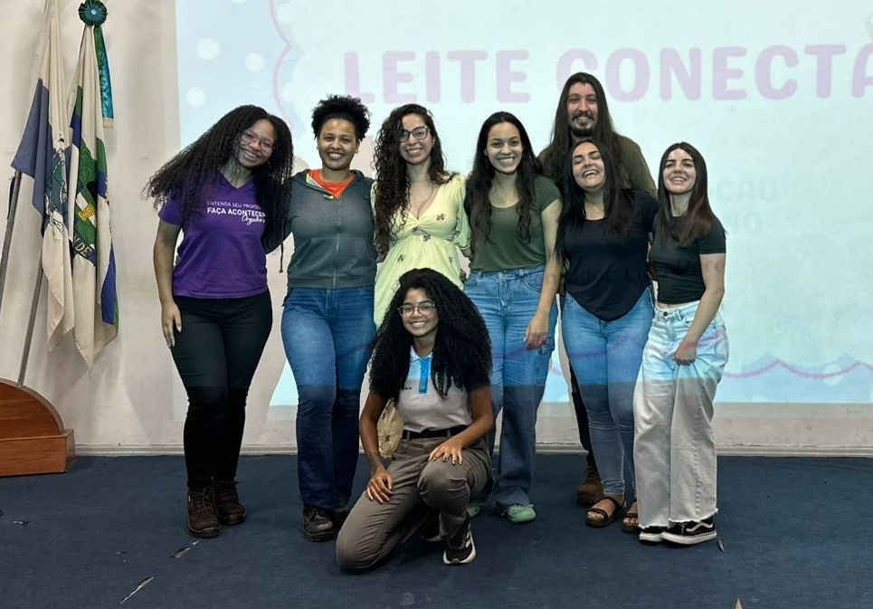

Aleitamento materno: cuidado, saúde e amor desde os primeiros dias de vida.
Conhecimento e acolhimento para mães, bebês e famílias.
Como Doar
Cadastre-se em um banco de leite, siga as orientações para coleta e armazene o leite com segurança.
Sua doação ajudará bebês que precisam.💞
Quem Precisa
A doação ajuda um bebê a se alimentar com segurança.
"A amamentação é um ato de amor; a doação do leite materno é um ato de amor redobrado."
-Marcelo Queiroga, Ex-ministro da Saúde do Brasil.
Quem Somos
O Leite Conecta é um projeto voltado à amamentação e ao incentivo à doação de leite materno, fortalecendo o acesso à informação sobre bancos de leite humano.
Nosso objetivo é conectar mães que amamentam e podem doar ao cuidado de bebês que precisam desse alimento essencial para crescer com saúde e proteção.

Missão
Incentivar a doação de leite materno e salvar vidas.
Propósito
Ajudar bebês prematuros a receberem nutrição segura.
Impacto
Uma única doadora pode ajudar vários bebês.
Benefícios do Aleitamento Materno
Benefícios para o Bebê
- Fortalece a imunidade.
- Favorece o desenvolvimento neurológico.
- Fornece todos os nutrientes necessários até os 6 meses.
Desenvolvimento do Bebê
- Auxilia na fala.
- Auxilia na mastigação.
- Contribui para o desenvolvimento saudável da boca e da face.
Benefícios para a Mãe
- Reduz o risco de câncer de mama.
- Auxilia na recuperação pós-parto.
- Favorece a contração uterina.